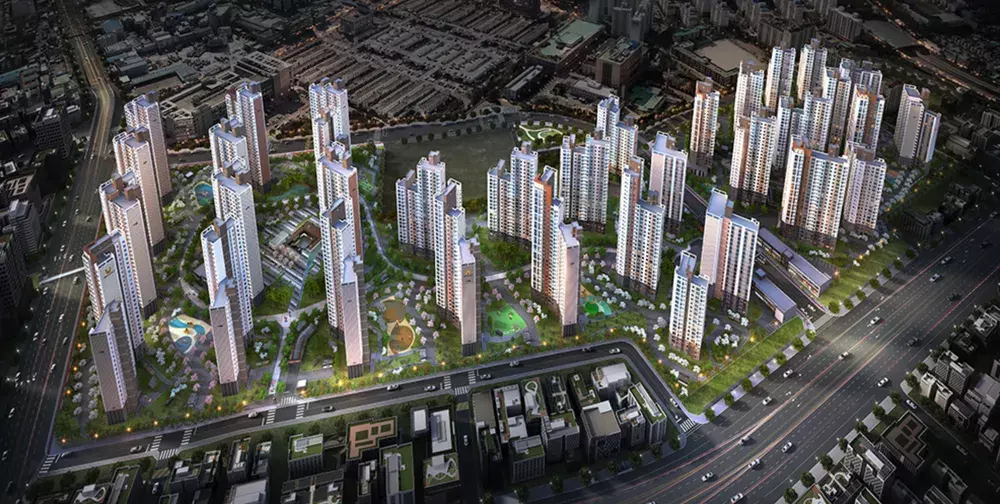

호원초등학교
단지 인접 · 도보 권역왕복 4차선 도로 하나를 사이에 두고 단지에 매우 가까운 공립초. 어린 자녀 통학의 안전성이 단지 매수 우선순위 상위로 평가됨.
호원초교주변지구 재개발 · "호원초"의 단지명 핵심
2021년 입주 5년차의 신축이 만든 도시. 도시(Urban)와 식물(Vine)의 결합으로 이름지어진 단지에는, 도시의 편의와 자연의 호흡이 함께 있습니다.
평촌은 학원가의 도시입니다.
어바인퍼스트는 그 학원가의
가장 가까운 신축 대단지입니다.
4,154세대 — 안양 동안구 단일 단지 압도적 1위. 단지 인근 8,800세대 주거타운의 핵. 입주 5년차 신축의 단지 인프라와 평촌 학원가의 학습 인프라가 한 자리에 모입니다.
규모·신축·학원가·교통. 평촌 권역에서 이 네 가지를 동시에 갖춘 단지는 흔치 않습니다.
1·2단지 3,850세대와 3단지(더샵) 304세대로 구성된 안양 동안구 단일 단지 압도적 1위. 포스코건설·SK건설·대우건설·현대건설 4사 컨소시엄이 함께 시공한 신뢰성의 결정체. 인근 단지와 합쳐 약 8,800세대 주거타운의 중심.
광교·분당 명문 단지 대부분이 10년차 이상. 평촌어바인퍼스트는 5년차로 단지 인프라의 신축감과 평면 효율이 모두 살아있습니다. 대형 석가산 조경, 2층 커뮤니티 시설, 1.16대/세대 주차.
학원만 280여 개. 대치동·목동·분당과 함께 수도권 4대 학원가. 학원가사거리부터 자유공원 사거리까지 약 400m 양 맞은편에 입시·선행·어학·논술 학원이 밀집. "안양의 대치동"으로 불리는 학습 인프라가 단지 권역 안에 있습니다.
1·4호선 금정역 도보 10분으로 서울역·사당 접근성 확보. 인덕원~동탄선(인동선) 호계사거리역 신설로 단지 도보권에 지하철역 추가 예정. GTX-C 본격 공사로 권역 전체 광역 접근성이 동반 강화.
현재 1·4호선 환승역 금정역까지 도보 10분. 인동선·GTX-C 등 미래 교통 호재가 동시에 진행되며 단지의 도시 접근성을 추가 확장합니다.
4,154세대 자체 인프라와 평촌·범계 권역 상권의 시너지. 조경·커뮤니티·학원·의료가 한 권역에.
경기도 내 최고 수준 조경 단지로 업그레이드. 1~3층 외벽에 한 단계 높은 고급 석종 적용, 부출입구에 대형 문주 추가. 단지에 들어서는 첫 인상부터 명품 단지의 격조.
단지 중앙부에 2층 규모 대형 커뮤니티. 피트니스·골프연습장·게스트하우스 등 신축 단지 풀세트. 입주민의 일상 안에 자연스럽게 자리한 도시 라운지.
"아이 키우기 좋은 단지"로 입주민 평가 1위. 놀이터가 많고 단지 구조가 가족 친화적. 4,154세대 대단지의 자녀 커뮤니티 두께가 자연스럽게 형성됨.
대치동·목동·분당과 함께 수도권 4대 학원가. 학원가사거리부터 자유공원 사거리까지 약 400m 양 맞은편에 학원이 밀집. 차량 라이딩 한 번이면 모든 교육 카테고리가 한 자리에.
경기도청 권역 상권. 백화점급 시설은 부재하나 F&B·로컬 상권이 풍부. 일상 쇼핑부터 외식까지 단지 권역 안에서 완성.
안양·평촌 권역 종합병원. 광교 아주대병원 같은 상급종합 등급은 아니나, 권역 의료 인프라는 일상 진료부터 응급까지 충분한 수준.
4,154세대 대단지치고 충분한 주차 확보. 지하 위주 동선으로 단지 지상은 보행자 중심.
포스코건설(더샵) · SK건설(뷰) · 대우건설(푸르지오) · 현대건설(힐스테이트) 공동시공. 단일 브랜드 단지에서는 볼 수 없는 4사 노하우의 결합.
도보·차량 권역의 도시공원. 평촌신도시 자유공원은 학원가와 연결된 산책 동선으로, 학습과 휴식이 자연스럽게 이어집니다.
평촌 학원가는 전국 4대 학원가. 280여 개 학원이 평촌대로 일대에 밀집. 단지에서 학원가 코어까지 차량 약 15분.
왕복 4차선 도로 하나를 사이에 두고 단지에 매우 가까운 공립초. 어린 자녀 통학의 안전성이 단지 매수 우선순위 상위로 평가됨.
호계동 위치 일반계 공립고. 학교 자체 진학률은 평촌 학원가 효과를 직접 반영하지 않으며 평범한 수준. 학군 가치는 권역 학원 인프라에서 나옴.
평촌대로와 귀인로 교차 학원가사거리부터 약 400m 양 맞은편에 학원 280여 개 밀집. 원스톱 라이딩이 가능한 한국형 학원 클러스터.
안양 동안구 평준화 추첨 권역. 자유공원 인근 명문 학군(귀인동·신촌동) 학교도 권역 추첨 풀에 포함될 수 있음. 단, 추첨이므로 확정 학군은 아님.
인덕원~동탄선(인동선)이 호계사거리역 신설로 단지 도보권에 추가됩니다. GTX-C 본격 공사도 함께 진행. 어바인퍼스트는 두 노선 호재의 직접 수혜권에 있습니다.
3,850세대 입주 시작. 안양 동안구 단일 단지 최대 규모 등장. 도시 인프라와 신축 단지의 결합 시작.
304세대 추가 입주로 총 4,154세대 완성. 컨소시엄 단지 규모의 마지막 퍼즐.
인덕원~동탄선 호계사거리역 신설 추진, GTX-C 중재 종료 후 본격 공사 단계. 평촌 권역에 두 노선의 동시 호재가 진행 중.
호계사거리역 신설로 단지 도보 권역에 지하철역 추가. 강남 환승 동선 단축. 시점은 변동 가능.
호계사거리역(가칭) 신설은 단지 도보권에 지하철역이 추가되는 것을 의미합니다. 현재 금정역 도보 10분에서 도보 5분 내 지하철 접근으로 단축. 단, 인동선 개통 시점은 변동 가능하며, 강남 직결 효과는 환승 동선 단축 수준입니다.
84㎡(34평) KB시세 9.6억. 광교 자연앤힐스테이트(17.8억) 대비 약 54% 가격으로 신축 + 학원가 권역을 확보할 수 있습니다.
모든 자산에는 그늘이 있습니다. 평촌어바인퍼스트도 완벽하지 않습니다.
매수 결정 전 반드시 알고 있어야 할 여섯 가지를 정리합니다.
'평촌'이라는 단지명에도 불구하고 평촌신도시 외곽인 호계동. 평촌 학원가 코어(귀인·신촌동)까지는 도보 부담이 있으며 큰 도로(경수대로)를 건너야 합니다.
단지 인접 평촌고는 3.8등급(전국 상위 71%)으로 광교고(3.1) 등 신도시 명문에 비해 낮음. 학원가 효과는 "단지 진학률"이 아닌 "권역 학원 인프라"로 측정됩니다.
1·4호선 금정역에서 강남까지 환승 1회 필요(약 45분). 광교 자연앤힐스(신분당선 강남 직결 30분) 대비 강남 출퇴근 매력은 낮음. 인동선 개통 후 개선 예정이나 시점 불확실.
경수대로 등 6차선 도로 인접. 광교호수공원·산 같은 대형 자연자산이 단지 도보권에 부재. 안양천·자유공원은 일정 거리.
포스코·SK·대우·현대 공동시공. 신뢰성은 높으나 단일 브랜드 단지 대비 브랜드 가치 통합성·관리 일관성은 약할 수 있음.
57~115㎡ 다양한 평형 혼합 구성. 광교 자연앤힐스(33평 단일) 대비 입주민 라이프스테이지 다양 → 커뮤니티 응집력은 상대적으로 약함.
공식 자료의 단지 조감도와 야경. 4,154세대 대단지의 도시 표정을 담은 한 컷.

광교 가격의 절반으로
사는 신축 학원가 권역.
평촌어바인퍼스트는 광교의 대체재가 아닙니다.
"신축 × 학원가 × 가성비"를 동시에 사는 평촌 권역의 신표준입니다.